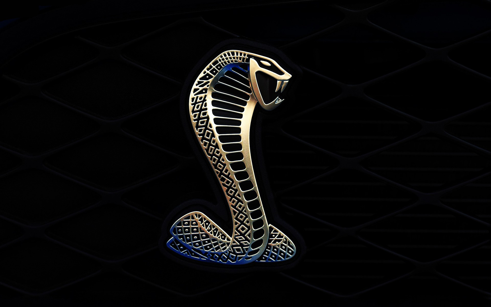

<ion-app>
  <ion-menu menuId="main-menu" content-id="main">
    <ion-header>
      <ion-toolbar>
        <ion-title>Menu</ion-title>
      </ion-toolbar>
    </ion-header>
    <ion-content>
      <ion-list>
        <ion-item>
          <ion-menu-toggle>
            <ion-item routerLink="/usuario">
              <ion-chip>
                <ion-avatar>
                  
                </ion-avatar>
                <ion-label>Frost Hernandes</ion-label>
              </ion-chip>
          </ion-item>
          </ion-menu-toggle>
        </ion-item>
        <ion-item>
          <ion-menu-toggle>
            <ion-item routerLink="/home">
            <ion-icon name="home-outline" slot="start"></ion-icon>
            <ion-label>Inicio</ion-label>
          </ion-item>
          </ion-menu-toggle>
        </ion-item>
        <ion-item>
          <ion-menu-toggle>
          <ion-item routerLink="/evaluacion">
          <ion-icon name="clipboard" slot="start"></ion-icon>
          <ion-label>Evaluacion</ion-label>
        </ion-item>
        </ion-menu-toggle>
        </ion-item>
        <ion-item>
          <ion-menu-toggle>
          <ion-item routerLink="/datos">
          <ion-icon name="people" slot="start"></ion-icon>
          <ion-label>Datos de Empleados</ion-label>
        </ion-item>
        </ion-menu-toggle>
        </ion-item>
        <ion-menu-toggle>
          <ion-button routerLink="/login" expand="block" shape="round">Log out</ion-button>
        </ion-menu-toggle>
      </ion-list>
    </ion-content>
  </ion-menu>
  <ion-router-outlet id="main"></ion-router-outlet>
</ion-app>